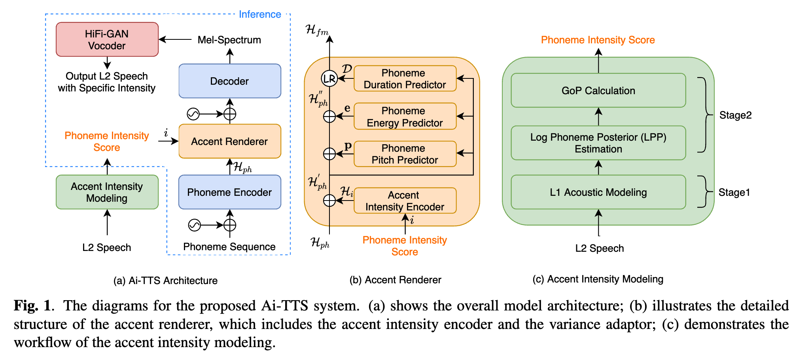
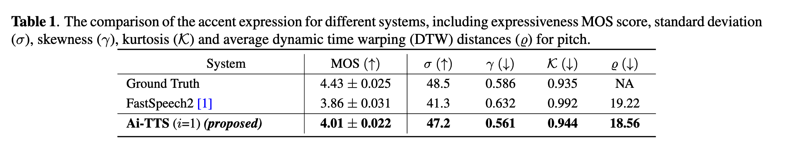
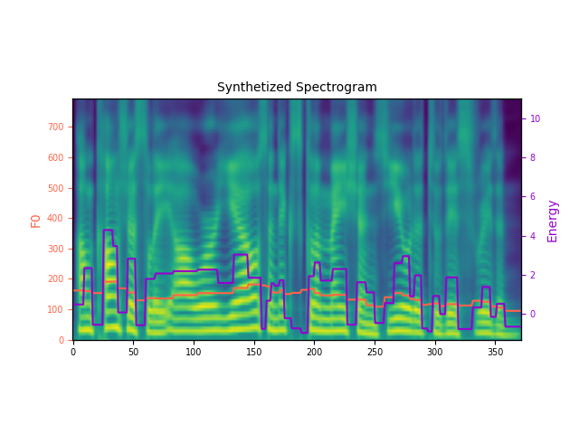
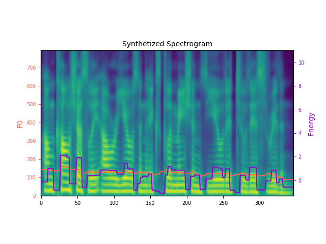
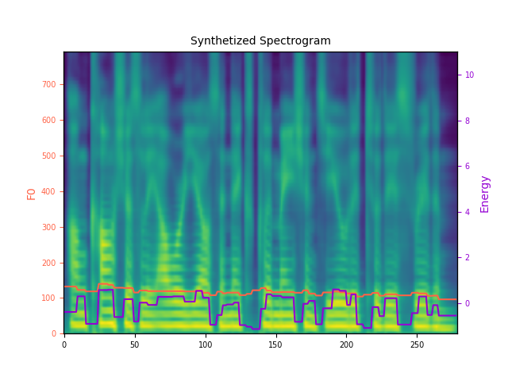

Explicit Intensity Control for Accented Text-to-Speech
Abstract
Accented text-to-speech (TTS) synthesis seeks to generate speech with an accent (L2) as a variant of the standard version (L1). How to control the intensity of accent in the process of TTS is a very interesting research direction, and has attracted more and more attention. Recent work design a speaker-adversarial loss to disentangle the speaker and accent information, and then adjust the loss weight to control the accent intensity. However, such a control method lacks interpretability, and there is no direct correlation between the controlling factor and natural accent intensity. To this end, this paper propose a new intuitive and explicit accent intensity control scheme for accented TTS. Specifically, we first extract the posterior probability, called as "Goodness of Pronunciation (GoP)" from the L1 speech recognition model to quantify the phoneme accent intensity for accented speech, then design a FastSpeech2 based TTS model, named Ai-TTS, to take the accent intensity expression into account during speech generation. Experiments show that the our method outperforms the baseline model in terms of accent rendering and intensity control.

Preliminary Experiments for Accent Expression
To understand how the accent renderer performs, we randomly select 100 utterances from the test set as the test samples and report the 5-scale Mean Opinion Score (MOS) for three systems, including Ground Truth L2 speech, synthesized L2 speech by FastSpeech2 [1] and our Ai-TTS. For fair comparison, we set $i$ to 1 for all input utterances of Ai-TTS. We invite 20 listeners and report the subjective MOS results in the second column of Table 1. It is observed that our Ai-TTS achieves a MOS of 4.01 $\pm$ 0.022, that is significantly higher than FastSpeech2 baseline and very close to the Ground Truth. For objective evaluation, we follow [1] and report the moments (including standard deviation ($\sigma$), skewness ($\gamma$) and kurtosis ($\mathcal{K}$)), and average dynamic time warping (DTW) [2] ($\varrho$) of the pitch distribution between the synthesized L2-accented speech and the ground truth reference in the third to sixth columns of Table 1. It can be seen that the Ai-TTS system is reported with all values that are closer to those of the Ground Truth than FastSpeech2. The subjective and objective evaluations suggest that our Ai-TTS with accent renderer achieves more expressive L2 speech in terms of accent expression.
Main Results
Controllability Evaluation on Utterance-level
Unconsciously, our yells and exclamations yielded to this rhythm.
(Speaker: TXHC; Accent: Mandarin)
| Ground Truth | DAW (Intensity = "strong") | Ai-TTS (Intensity = "strong") |
|---|---|---|
He made no reply as he waited for Whittemore to continue.
(Speaker: NCC; Accent: Mandarin)
| Ground Truth | DAW (Intensity = "strong") | Ai-TTS (Intensity = "strong") |
|---|---|---|
Controllability Evaluation on Phoneme-level
Unconsciously, our yells and exclamations yielded to this rhythm.
(Speaker: TXHC; Accent: Mandarin)
Phoneme Sequence: AH2 N K AA1 N SH AH0 S L IY0 sp AW1 ER0 Y EH1 L Z AE1 N D sp EH2 K S K L AH0 M EY1 SH AH0 N Z sp Y IY1 L D IH0 D T UW1 DH IH1 S R IH1 DH AH0 M.
|  |
|  |
|  |
References:
[1] Yi Ren, Chenxu Hu, Xu Tan, Tao Qin, Sheng Zhao, Zhou Zhao, and Tie-Yan Liu, “Fastspeech 2: Fast and high-quality end-to-end text to speech,” in International Conference on Learning Representations, 2020.[2] Meinard M ̈uller, “Dynamic time warping,” Information retrieval for music and motion, pp. 69–84, 2007.